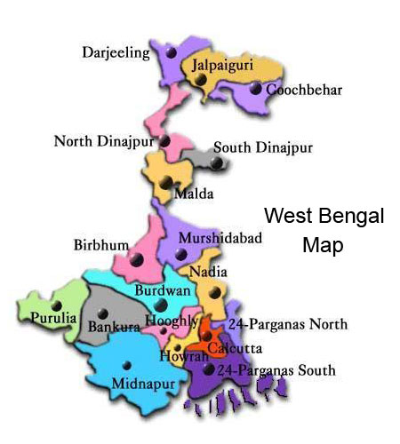

LET'S HAVE A LOOK AT THE TOUR MAP
WHERE TO VISIT , WHAT TO SEE?
SOME HOT PICKS(#HAVE_TO_VISIT)
- SUNDERBANS - FAMOUS FOR THE MANGROVES AND THE ROYAL BENGAL TIGER
- KOLKATA - THE CITY OF JOY
- VICTORIA MEMORIAL - SCULPTURES AND ARTICLES USED BY QUEEN VICTORIA WHILE IN BENGAL
- EDEN GARDENS - ONE OF THE LARGEST CRICKET STADIUM WITH SURROUNDING GARDENS
- HOWRAH BRIDGE - HANGING BRIDGE WHICH COULD BE OPENED (AT A TIME) TO PASS CARGO SHIPS
- PARK STREET - CATHOLIC CHURCHES
- BABUGHAT - GANGA SIDE
- JORASHANKO - BIRTH PLACE OF WORLD POET RABINDRANATH TAGORE
- ELGIN ROAD - NETAJI BHAWAN
- KHARAGPUR - LARGEST RAIL STATION OF THE WORLD AND BORDER TO CHATTISGARH AND JHARKHAND
- DARJEELING - TEA PLANTATION AND HILL STATION
- KURSEONG - LAND OF WHITE ORCHIDS
- SIKKIM
- NATHULA PASS
- ZERO POINT
- LAAL BABA MANDIR
- LACHUNG - LACHANG
- YANTHAM
- SUNDARBANS - BIGGEST MANGROVE FORESTS IN THE WORLD
- SILIGURI - GATEWAY OF NORTH-EAST INDIA, TEMPLES ,TEA GARDENS
- MIRIK - HIMALAYAN VALLEY
- DIGHA - PRISTINE BEACHSIDE TO BAY TO BENGAL
- DOOARS - RICH FORESTS AND WILDLIFE SAFARI
- MANDARMANI - LARGEST STRETCH OF THE BAY OF BENGAL BEACH
- KALIMPONG - PANORAMIC VALLEY
- MURSHIDABAD - REIGN OF THE PRE BRITISH NAWABS
- HAZAR DUARI - PALACE OF THOUSAND DOORS
- KAATH GOLA
- NIZMAT IMAMBARA
- FOOTI MOSQUE
- WASIF MANZIL
- KHOSH BAHAN
- KATRA MOSQUE
- JAHAN KOSHA CANNON
- NASHIRPUR PALACE
- NAVADWIPA AND MAYAPUR - GOD'S OWN LAND
- SANTINIKETAN - RABINDRANATH'S HOME ,MUSEUM ,RURAL ARTEFACTS
- BAKKHALI - PERFECT BEACH GATEWAY
- BANKURA AND BISHNUPUR - TERRACOTTA ARCHITECTURES AND HILLS
- COOCH BEHAR - ONCE A PROVINCE OF KOCH DYNASTY MAKES A GOOD ECO TOURISM DESTINATION
- TARAPITH - FAMOUS HINDU PILGRIMAGE ,BELIEVED TO BE THE PLACE WHERE EYES OF SATI(GODDESS DURGA) FELL
- PURULIA - MESMERIZING NATURAL BEAUTY WITH LAKES HILLS AND GREENERY , CHAU DANCE FORM
- JALPAIGURI - MAINLY FAMOUS FOR ITS WILDLIFE DIVERSITY , GORUMARA NATIONAL PARK(ASIAN ELEPHANTS , ONE-HORN RHINO , GREAT INDIAN HORNBILL)
- GANGASAGAR - ISLAND DESTINATION NEAR SUNDERBANS WHICH BECOMES LIT DURING THE FESTIVE SEASON OF "MAKAR SANKRANTI"
- BELUR MATH - SWAMI VIVEKANANDA'S WORK AND MEDITATION PLACE
- SANDAKPHU - IS THE HIGHEST PEAK IN WEST BENGAL ,ALMOST NEAR THE BORDER OF NEPAL
- BUXA - TIGER RESERVE
- JAYRAMBATI - PLACE OF HOLY MOTHER SRI SARADA DEVI, OLD WORLD CHARM
- TINCHULEY - OFFBEAT HAMLET
- KAMARPUKUR - BIRTH PLACE OF THE PIOUS AND SAGACIOUS SAINT ,SRI RAMKRISHNA PARAMHANSA
- BAKRESHWAR - MYTHOLOGY LOVER'S PARADISE
OTHER_ATTRACTIONS
- DURGAPUR - STEEL CAPITAL OF EAST INDIA, DURGAPUR BARRAGE OR DAMODAR RIVER DAM
- HALDIA - MERE RIVER PORT ASSISTING KOLKATA
- RAICHAK - FRESH AIR GHAT
- LATAGURI - OUTSKIRTS OF NATIONAL PARK
- LALEGAON - SNOW CAPPED MOUNTAINS AND ANCIENT BUDDHIST MONASTRIES
- BARDHAMAN - OLD WORLD CHARM
- MUKUTMANIPUR - LOCATED NEAR KOLKATA IS A POPULAR WEEKEND DESTINATION
- MALDA - MOSQUES AND MANGO VARIETIES THAT GO ABROAD MAINLY
- SHANKARPUR - LOCATED NEAR DIGHA , HAS PRISTINE BEACHES
- CHANDANNAGAR - CITY OF LIGHTS
- MIDNAPORE - EXPERIENCE THE REMOTE RURAL CULTURE
- BAGDOGRA - SMALL HILL STATION TOWN AT THE FOOTHILLS OF THE HIMALAYAS
- RISHYAP - QUIET ROMANTIC VILLAGE EN-ROUTE TO DARJEELING
- SURULIA - POPULAR PICNIC SPOT AMONGST TRAVELLERS
- TAJPUR - BETWEEN SHANKARPUR AND MANDARMANI THIS IS THE ONLY SEA-SHORE WHERE THE WAVES HIT A BIT HIGH
- BAABUR HAAT - LONG STRETCHES OF FARMLANDS